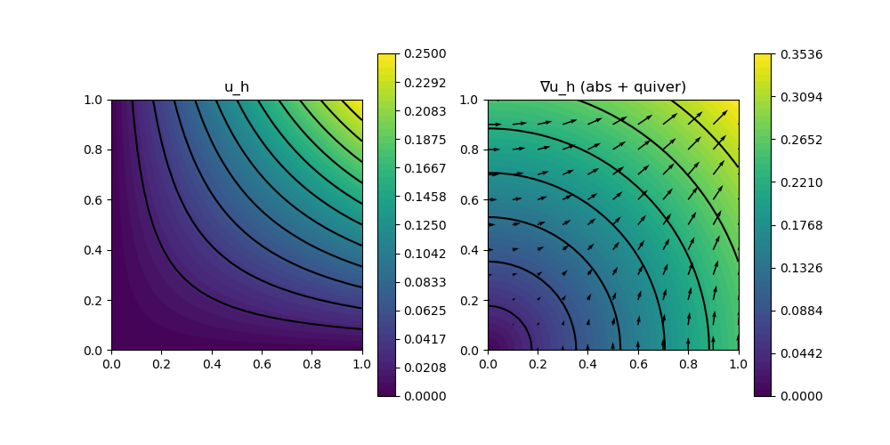

212 : Nonlinear Poisson Transient 2D
This example computes a transient velocity $\mathbf{u}$ solution of the nonlinear Poisson problem
\[\begin{aligned} \mathbf{u}_t - \mathrm{div}((1+\beta\mathbf{u}^2) \nabla \mathbf{u}) & = \mathbf{f}\\ \end{aligned}\]
with (some time-dependent) exterior force $\mathbf{f}$. The parameter $\beta$ steers the strength of the nonlinearity.
The time integration will be performed by the internal CrankNicolson rule (or optionally BackwardEuler) of GradientRobustMultiPhysics. A manufactureed quadratic-in-space and qaudratic-in-time solution is prescribed to test if the solver computes the exact solution.
module Example212_NonlinearPoissonTransient2D
using GradientRobustMultiPhysics
# kernel for nonlinear diffusion operator
function diffusion_kernel!(result, input)
# input = [u, grad(u)]
result[1] = (1+input[1]^2)*input[2]
result[2] = (1+input[1]^2)*input[3]
return nothing
end
# everything is wrapped in a main function
function main(; verbosity = 0, Plotter = nothing, nlevels = 3, timestep = 1e-1, T = 0.5, FEType = H1P2{1,2}, time_integration_rule = CrankNicolson, t_power = 2, testmode = false)
# set log level
set_verbosity(verbosity)
# set exact solution and data
u = DataFunction((result,x,t) -> (result[1] = x[1]*x[2]*(1-t)^t_power), [1,2]; dependencies = "XT", quadorder = 2)
∇u = DataFunction((result,x,t) -> (result[1] = x[2]*(1-t)^t_power; result[2] = x[1]*(1-t)^t_power), [2,1]; name = "∇(u)", dependencies = "XT", quadorder = 1)
f = DataFunction((result,x,t) -> (result[1] = -2*(x[1]^3*x[2] + x[2]^3*x[1])*(1-t)^(3*t_power) -t_power*x[1]*x[2]*(1-t)^(t_power-1)), [2,1]; name = "∇(u)", dependencies = "XT", quadorder = 4)
# initial grid and final time
xgrid = uniform_refine(grid_unitsquare(Triangle2D),1)
# prepare nonlinear expression (1+u^2)*grad(u)
nonlin_diffusion = GenerateNonlinearForm("(1+u^2) ∇u ⋅ ∇v", [Identity, Gradient], [1,1], Gradient, diffusion_kernel!, [2,3]; quadorder = 2, ADnewton = true)
# generate problem description and assign nonlinear operator and data
Problem = PDEDescription("nonlinear Poisson problem")
add_unknown!(Problem; unknown_name = "u", equation_name = "nonlinear Poisson equation")
add_operator!(Problem, [1,1], nonlin_diffusion)
add_boundarydata!(Problem, 1, [1,2,3,4], BestapproxDirichletBoundary; data = u)
add_rhsdata!(Problem, 1, RhsOperator(Identity, [0], f))
# define error evaluators
L2ErrorEvaluator = L2ErrorIntegrator(Float64, u, Identity; time = T)
H1ErrorEvaluator = L2ErrorIntegrator(Float64, ∇u, Gradient; time = T)
NDofs = zeros(Int,nlevels)
Results = zeros(Float64,nlevels,2)
# loop over levels
Solution = nothing
for level = 1 : nlevels
# refine grid
xgrid = uniform_refine(xgrid)
# generate FESpace and solution vector
FES = FESpace{FEType}(xgrid)
Solution = FEVector{Float64}("u_h",FES)
# set initial solution
interpolate!(Solution[1], u)
# generate time-dependent solver
sys = TimeControlSolver(Problem, Solution, time_integration_rule; timedependent_equations = [1], maxiterations = 5)
# use time control solver by GradientRobustMultiPhysics
advance_until_time!(sys, timestep, T)
# calculate L2 and H1 error and save data
NDofs[level] = length(Solution.entries)
Results[level,1] = sqrt(evaluate(L2ErrorEvaluator,Solution[1]))
Results[level,2] = sqrt(evaluate(H1ErrorEvaluator,Solution[1]))
end
if testmode == true
return Results[end,2]
else
# plot
GradientRobustMultiPhysics.plot(xgrid, [Solution[1], Solution[1]], [Identity, Gradient]; Plotter = Plotter)
# print/plot convergence history
print_convergencehistory(NDofs, Results; X_to_h = X -> X.^(-1/2), ylabels = ["|| u - u_h ||", "|| ∇(u - u_h) ||"])
end
end
function test()
error1 = main(; nlevels = 1, FEType = H1P2{1,2}, t_power = 1, time_integration_rule = BackwardEuler, testmode = true)
error2 = main(; nlevels = 1, FEType = H1P2{1,2}, t_power = 2, time_integration_rule = CrankNicolson, testmode = true)
return max(error1,error2)
end
endThis page was generated using Literate.jl.
